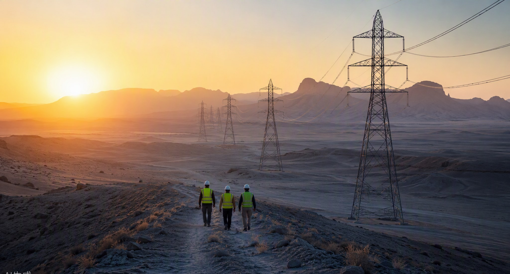
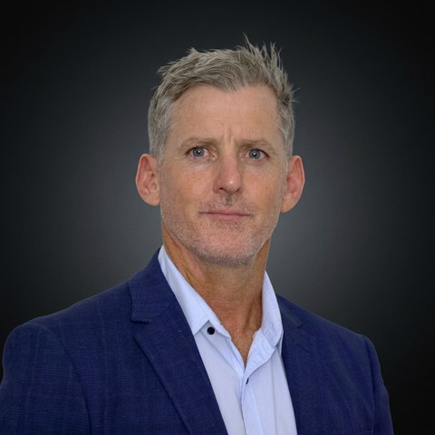
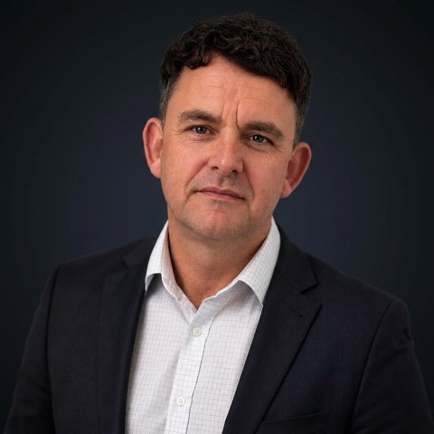
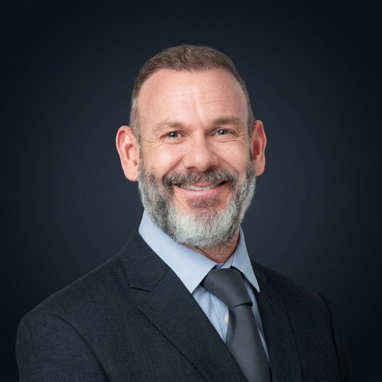

أسينديرا Advisory · الصحة والسلامة والبيئة · الاستثمار
كبار ممارسين قادوا استشارات الصحة والسلامة والبيئة والاستثمار في مشاريع البنية التحتية والطاقة عبر خمس قارات. نحن لا نتعاقد من الباطن على العمل. نحن نؤديه.
كيف نعمل معك
نبدأ من بياناتك، وندع التقنية ترسم الطريق إلى التحسين، ثم نصمم الحل الذي يوصلك إليه بشكل صحيح من المرة الأولى.
نتحقق قبل أن نقترح. تقرأ التقنية سجلاتك الحالية وبياناتك الميدانية، فيُبنى النطاق على ما سيحسّن الأداء فعلاً، ولا يُسعَّر شيء على الافتراض.
أحياناً يكون تغييراً بسيطاً، وأحياناً عملية جديدة، وأحياناً نظاماً يُعاد بناؤه. مهما تطلب الأمر، نصمم الإصلاح ونبقى إلى جانبك طوال التنفيذ.
النتائج لا قيمة لها إلا إذا أُصلحت. نعمل مع فرقك ومقاوليك حتى يصبح الإصلاح في مكانه ومثبتاً.
ندرّب أفرادك على إدارة المنهجية بأنفسهم. الهدف: أن تنجز أكثر بجهد أقل، وأن تقضي وقتك حيث يهم، في الميدان.
مهمة مختارة

لمطوّر طاقة دولي، أدرنا منظومة التوثيق الكاملة كنظام متصل واحد عبر برامج رأسمالية كبرى، من اختيار المقاولين حتى التشغيل الفعلي.
في ذروتها، كان عشرة آلاف شخص على الأرض. قبل أن يُرفع أي رقم، كنا نتحقق من الدليل خلفه بأنفسنا. كل نتيجة جاءت بدليلها وطريق إصلاحها. ولكل قرار في مجلس الإدارة مالك مسمّى.
حُجبت هوية العميل بموجب اتفاقية سرية. المرجع المسمّى وتفاصيل المهمة الكاملة متاحة بموجب اتفاقية عدم إفصاح.
مجالات تركيزنا
ممارستان متخصصتان، يقود كل منهما خبير مسمّى يعمل معنا حصرياً، وقد أدى العمل بنفسه.
ندرس كيف تؤدي مؤسستك فعلاً، من مجلس الإدارة إلى الخطوط الأمامية. كيف يتخذ القادة قراراتهم تحت الضغط، وكيف تصمد الفرق، وهل يشعر الناس بالأمان للتعبير. بقيادة من أسس برنامج SASR للأداء البشري، المنظومة التي بنت عليها القوات الخاصة الأسترالية برامجها.
اكتشف الممارسة ←دعم متخصص لمشاريع خطوط الكهرباء، من التخطيط حتى التشغيل. كيف تُبنى الأبراج، وكيف تُمدّ الخطوط، وكيف تعمل الأطقم بأمان في المرتفعات. بقيادة مؤسس Innovecta Ltd، بخبرة تتجاوز عشرين عاماً على الأبراج وحولها، بما في ذلك مشاريع قائمة داخل المملكة.
اكتشف الممارسة ←شركاؤنا الرئيسيون
ننفذ بشبكة صغيرة من الخبراء المسمّين الذين يعملون معنا حصرياً. كُلٌّ اختير لقدرته، وسمّيناه بفخر.



خبراء مسمّون يعملون معنا حصرياً.
لماذا نحن
عقود من قيادة السلامة والبيئة والعناية الواجبة عبر خمس قارات، في الأسواق التي يصعب فيها التمسك بالمعايير.
حاصلون على شهادة ISO ومبنيون لتلبية معايير بنوك التنمية. تقاريرنا مصممة لتصمد أمام تدقيق الجهات التنظيمية والمقرضين.
الذكاء الاصطناعي يقرأ الوثائق ويقيّم المخاطر. وكبار الممارسين يصدرون الحكم. كل مخرَج تتم مراجعته من شريك قبل أن يصلك.
اعمل مع Advisory
المرحلة الأولى تقرأ ما لديك بالفعل، من السجلات والضوابط إلى البيانات الميدانية، وترسم أسرع طريق إلى موقف أقوى. ثم نسعّر العمل على قيمته، لا على ساعاته.